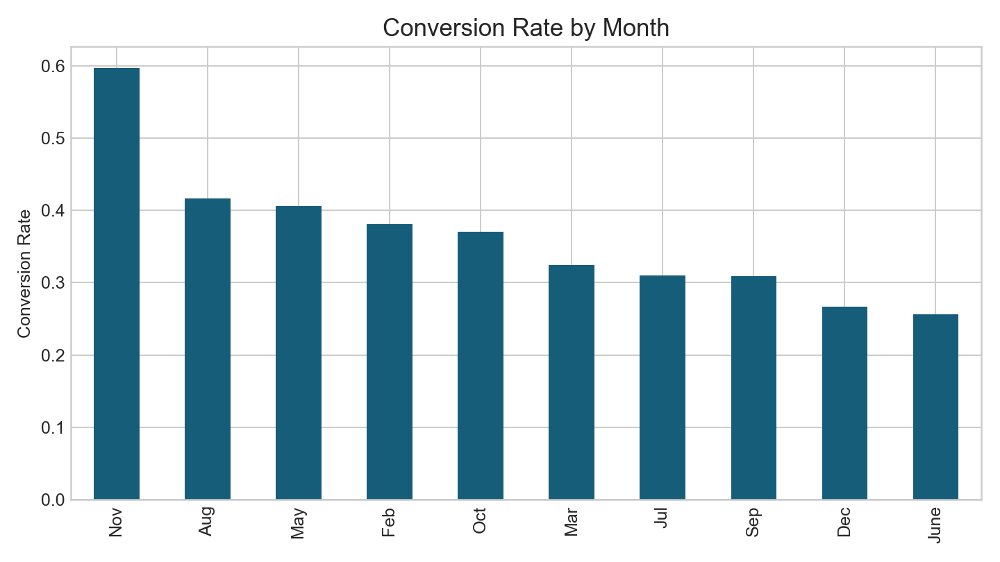
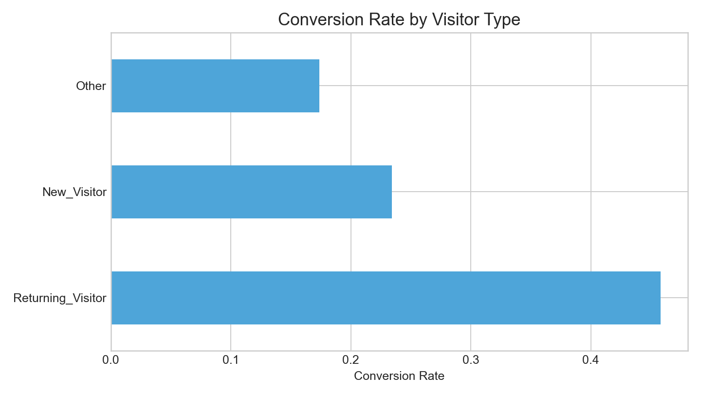
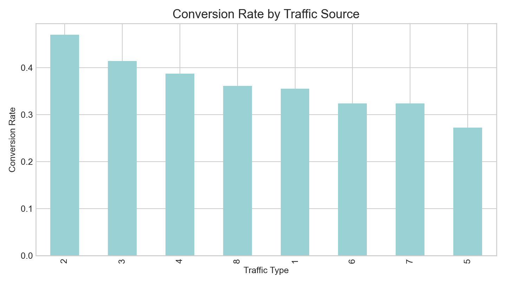
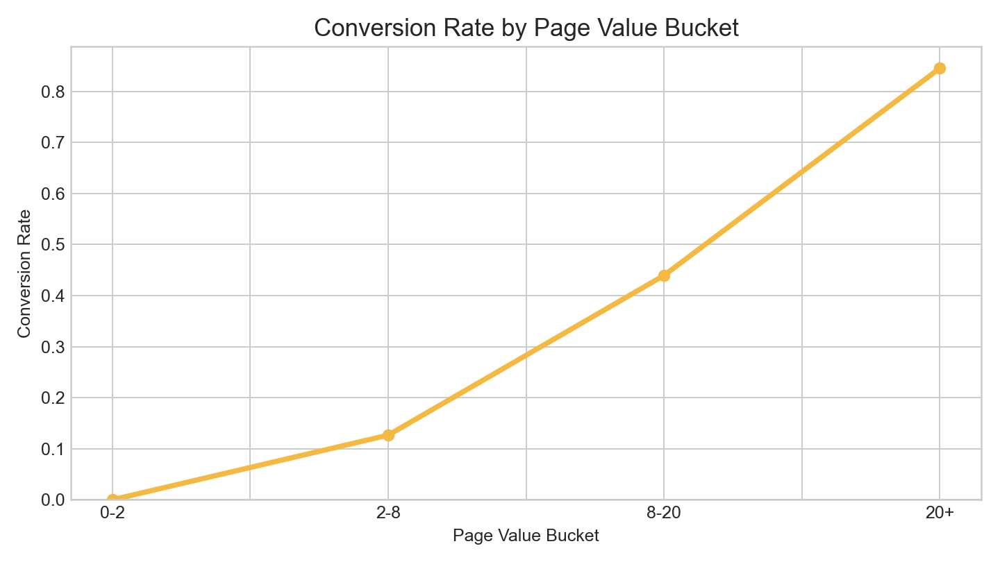

This project combines a data analyst RAG agent, a structured evaluation pipeline, and a presentation generator to help analysts move from business questions to stakeholder-ready outputs. This page is the static GitHub Pages showcase; the full interactive workflow lives in the Streamlit app.
Read project guide Download latest PPTBusiness analytics over online shopper behavior.
Ask questions, review insights, then export a deck.
Four models and four prompts compared systematically.
Dataset-focused presentation with charts and recommendations.




The final PowerPoint focuses only on the dataset, customer insights, behavior patterns, target customers, and recommendations. It intentionally excludes model-comparison content so it stays stakeholder-friendly and business-focused.
Download presentation